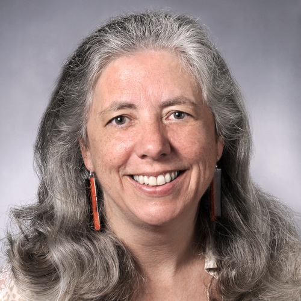

| |
8:30 - 8:50am
Great Room
| Welcome: Dr. Amy Slagell, College of LAS
Dr. Amy Slagell |
|  |
About Dr. Amy Slagell:
Amy Slagell earned her B.S.C. in communication at Ohio University in 1983. She earned her M.A. and Ph.D. in rhetoric and American public address at the University of Wisconsin and, before coming to Iowa as the director of the public speaking program in 1996, spent several years teaching in Birmingham, Ala. From 2006-2013 Amy led the Speech Communication Program in the Department of English. Her research explores contemporary public speaking pedagogy and 19th century public address with a particular focus on the impact of cultural and institutional structures that constrain the visibility and rhetorical choices of women as public speakers.
She has served as the Associate Dean for Academic Programs in the College since 2013.
More
|
| |
8:50 - 9:40am
Great Room
| Invited Talk: Chid Apte, Director: Mathematical Sciences & Blockchain Solutions, IBM Research
Chid Apte |
 |
Data is transforming business and industry in new and unprecedented ways. The confluence and availability of large-scale process as well as instrument generated data is driving new opportunities for decision optimization. I will discuss examples of industry applications that are benefiting from this trend, and technical challenges that remain to be addressed by the data science community for further exploiting the huge opportunities that lie ahead of us.
About Dr. Chid Apte:
He is Director of AI & Blockchain Solutions in the IBM Research Division, at the Thomas J. Watson Research Center in Yorktown Heights, New York. His department's research agenda covers theory and applications of Data Science and Operations Research. In addition to maintaining a basic research agenda in Mathematical Programming & Optimization, Algorithmic Theory, Applied Mathematics, Operations Management, Statistical Modeling & Forecasting, Machine Learning & Predictive Modeling, and Data Mining Systems, his teams are engaged in several solutions initiatives focused on Business Analytics for Enterprise Transformation, Agriculture, Manufacturing Optimization, and High-Performance (Big Data & HPC) Analytics. Chid has over twenty five years experience as a research scientist and technical leader in the data science industry with significant experience in predictive analytics solutions for insurance, finance, retail, manufacturing, and agriculture. Chid has led several projects to develop analytics extensions for IBM's analytics platform and solutions portfolio, and advanced analytics applicatipns for IBM's clients. He received his Ph.D. in Computer Science from Rutgers University, and a B. Tech. in Electrical Engineering from the Indian Institute of Technology (Bombay). He has published extensively in his areas of expertise, and actively involved in organizational aspects of leading data science conferences.
More
|
| |
9:40 - 10:30am
Great Room |
City of Big Data
Tom Schenk
|
|
|
Chicago's data science team are able to predict and prioritize problems that might arose in the city, ranging from public health to sanitation. Built in-house, contemporary statistical methods and big data technologies are paired with real-life issues to improve the quality of life and improve efficiency. A growing number of teams are using and incorporating data science as part of their regular decision-making processes. This presentation will discuss the projects and how they are paired with daily operations.
About Tom Schenk:
Tom Schenk is a researcher and author in a number of fields, including data science, open data, data visualization, and education research and policy. He is currently the Chief Data Officer at the City of Chicago, which includes leadership of the strategic use of data to improve the efficiency of city operations and improve the quality of life for residents. Tom has led the expansion of Chicago’s open data portal, implementation of predictive analytics to optimize city services, and leading the City’s database and business intelligence teams. He leads Tom has also co-founded and is currently the Chair of the Civic Analytics Network, an association of nearly two-dozen city CDOs, based at Harvard University’s Ash Center for Democratic Governance and Innovation.
Tom wrote Circos Data Visualization How-To and published several academic papers and book chapters. He has previously served as senior research at Northwestern University’s Department of Medical Social Sciences and led institutional effectiveness and accountability at the Iowa Departments of Education. He has led innovative efforts to use student-level longitudinal data to improve and measure education outcomes. He also led science, technology, engineering, and mathematics (STEM) policy in Iowa and was a coauthor of Iowa’s STEM roadmap. Tom was a visiting scholar with Iowa State University’s Office of Community College Research and Policy where he studied graduate-student unionization. He was also a lecturer at Grand View University in economics and statistics. He earned a Master’s degree in economics from Iowa State University and a Bachelor’s from Drake University.
More
|
10:30 - 10:45am
Great Room | Break |
| |
10:45 - 12:15pm
Location: Great Room |
Introduction to Statistics
Dr. Kris De Brabanter |
 |
This module will provide summer school participants a gentle introduction to probability and statistics concepts and prepare them for later modules in this summer school.
About Kris De Brabanter:
Dr. Kris De Brabanter is an assistant professor of Statistics at the Department of Statistics at Iowa State University. His research interest are in mathematical statistics, nonparametric regression, analysis of big data sets, machine learning, model selection methods, density estimation, nonparametric inference.
More |
12:15 - 1:30pm
Great Room | Lunch |
| |
1:30 - 3:15pm
Great Room |
Introduction to R
Dr. Heike Hofmann |
 |
This module introduces R, a widely popular language and environment for statistical
computing and graphics. This module is a prerequisite for the visualization module.
About Dr. Hofmann:
Dr. Heike Hofmann is a professor of
Statistics at the Department of Statistics at Iowa State University. Her areas of interest are Data Visualization, Multivariate Categorical Data Analysis, Statistical Computing, Exploratory Data Analysis and Interactive Statistical Graphics.
More.
|
| Tuesday, May 15 - Great Room, Memorial Union |
8:00 - 8:30am
Great Room | Light refreshments |
| |
8:30 - 10:30pm
Great Room |
Visualization - Part I
Dr. Heike Hofmann |
|
About Dr. Hofmann:
Dr. Heike Hofmann is a professor of
Statistics at the Department of Statistics at Iowa State University. Her areas of interest are Data Visualization, Multivariate Categorical Data Analysis, Statistical Computing, Exploratory Data Analysis and Interactive Statistical Graphics.
More.
|
10:30 - 10:45am
Great Room | Break |
10:45 - 12:15pm
Great Room |
Visualization - Part II (continued)
Dr. Heike Hofmann |
12:15 - 12:30pm
Great Room | Break |
| |
12:30 - 1:15pm
Great Room |
Narrating data and information Lunch
Dr. Inna Kouper |
 |
Details: This presentation aims to discuss a specific approach to visualizing data and information called "narrative visualization". It will illustrate techniques and challenges of bringing data to life through multiple examples and discussion on such important concepts of storytelling as author-reader relationship, genre, and narrative structure and point of view.
About Dr. Inna Kouper:
Dr. Inna Kouper is a research scientist at the Data to Insight Center at the School of Informatics, Computing, and Engineering at Indiana University. Her areas of research include cyberinfrastructure, socio-technical barriers to open science and data sharing, and user engagement. Dr. Kouper works on projects that create tools and services for data management and analytics in the social and environmental sciences.
More |
1:15 - 1:30pm
Great Room | Break |
| |
1:30 - 3:15am
Great Room |
Introduction to Python - Part I
Dr. Steve Kautz |
 |
This module is aimed at introducing audience to the Python programming
language and programming concepts.
About Dr. Kautz:
Dr. Kautz holds an M.S. in computer science and a Ph.D. in
mathematics from Cornell University. Prior to joining the teaching
faculty at Iowa State he spent 10 years on the faculty of Randolph College of
Lynchburg (Virginia) and then 8 years as a senior software engineer for
NewMonics (later acquired by Aonix, Inc), the developers of the
PERC(tm) virtual machine, a platform for real-time Java. Dr. Kautz's
time as an engineer was divided between work on the virtual machine
itself, including contributions to several implentations of threads,
and consulting services for customers. As part of the latter effort he
developed a one-week, hands-on course on concurrent Java that has been
presented to teams of developers worldwide over an 8-year period.
Dr. Steve Kautz is currently a lecturer of Computer Science at
Iowa State University.
More
|
3:15 - 3:30pm
Great Room | Break |
3:30 - 5:00pm
Great Room |
Introduction to Python - Part II (continued)
Dr. Steve Kautz |
| Wednesday, May 16 - Great Room, Memorial Union |
8:00 - 8:30am
Great Room | Light refreshments |
| |
8:30 - 10:30am
Great Room |
Applied Machine Learning - Part I
Dr. Jin Tian |
 |
About Dr. Jin Tian:
His research interests are Artificial intelligence and machine learning: probabilistic graphical models, Bayesian networks, causal inference.
More |
10:30 - 10:45am
Great Room |
Break |
10:45 - 12:15pm
Great Room |
Applied Machine Learning - Part II
Dr. Jin Tian |
12:15 - 1:30pm
Great Room |
Lunch |
| |
1:30 - 3:15pm
Great Room |
Scalable Tools - Part I
Dr. Adisak Sukul |
 |
About Dr. Adisak Sukul:
Dr. Adisak Sukul obtained his Ph.D. in Computer Science from Chulalongkorn University. Following his Ph.D., he was a visiting researcher at Iowa State University, lecturer in the computer science department at the King Mongkut's Institute of Technologies Ladkrabang, assistant director of Computer Service Center at the King Mongkut's Institute of Technologies Ladkrabang. He was also EIFL - OA/FOSS Country Coordinator for Thailand, Coordinate for the Open Access and the Free and Open Source Software working groups for EIFL (Electronic Information for Libraries), a global non-profit organization for developing country. Dr. Sukul has over 14 years of experience in IT Project Management and System Architect, and has co-founded three software companies in Thailand. Dr. Sukul has also consulted on e-Library and Institutional repository development project for various organizations including Thailand House of Representatives, Bangkok Metropolitan Administration, numbers of libraries and universities. Dr Adisak Sukul is currently a lecturer of Computer Science at Iowa State University.More |
3:15 - 3:30pm
Great Room |
Break |
3:30 - 5:00pm
Great Room |
Scalable Tools - Part II
Dr. Adisak Sukul |
| Thursday, May 17 - Great Room, Great Room |
Thursday's program consists of four parallel tracks. See linked programs for details. |
| Foundations |
| Digital Agriculture |
| Software Analytics |
| Big Data Applications |